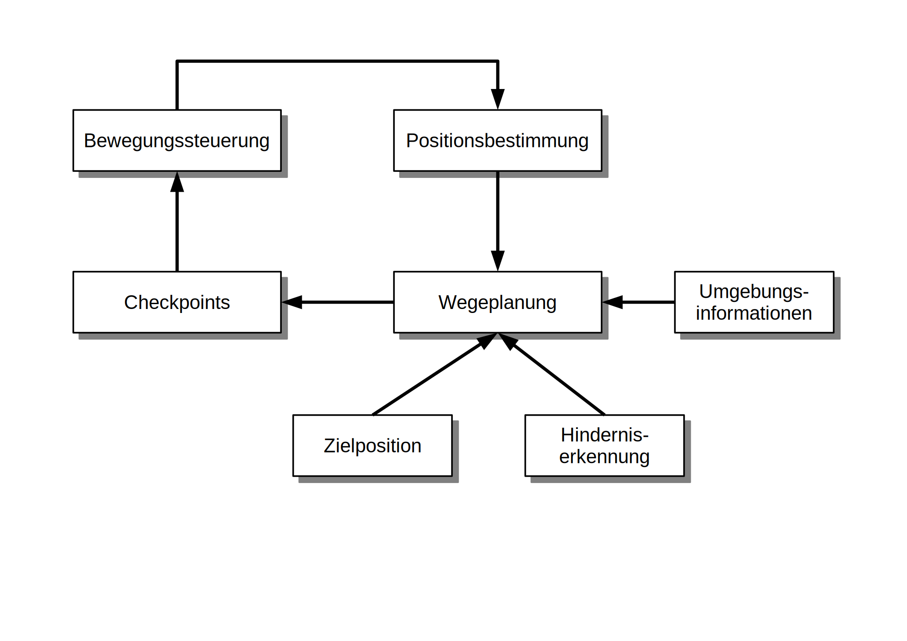
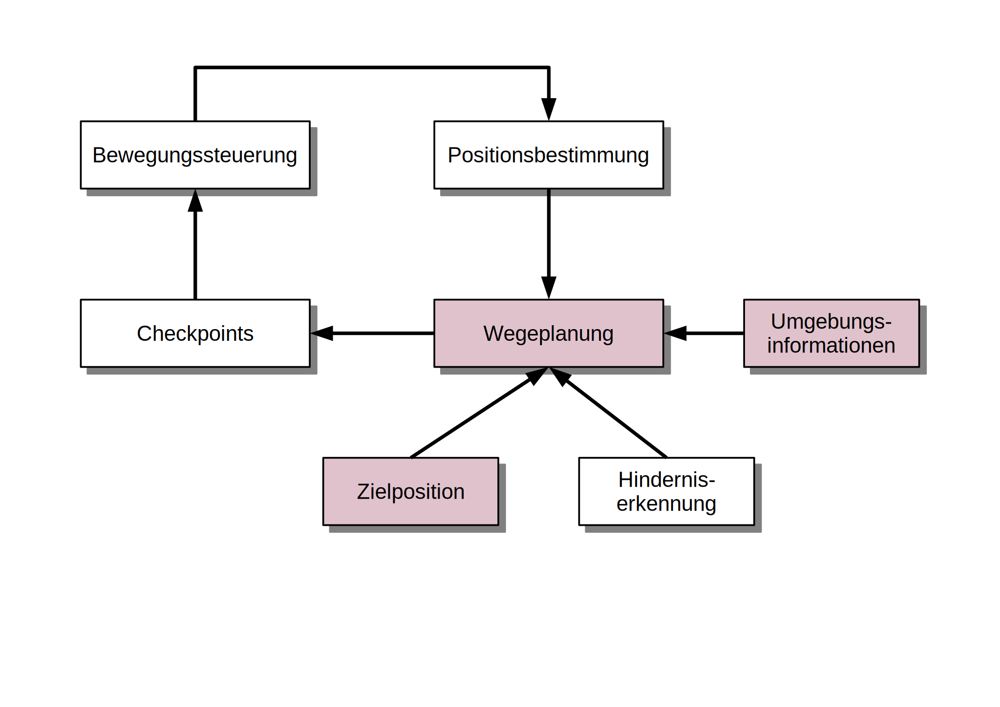
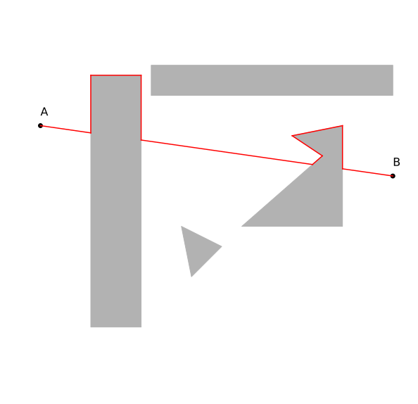
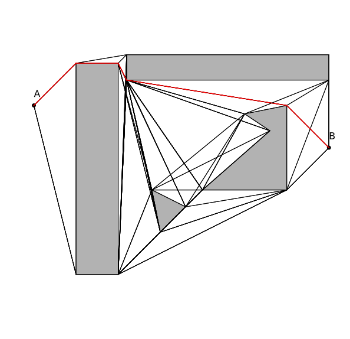
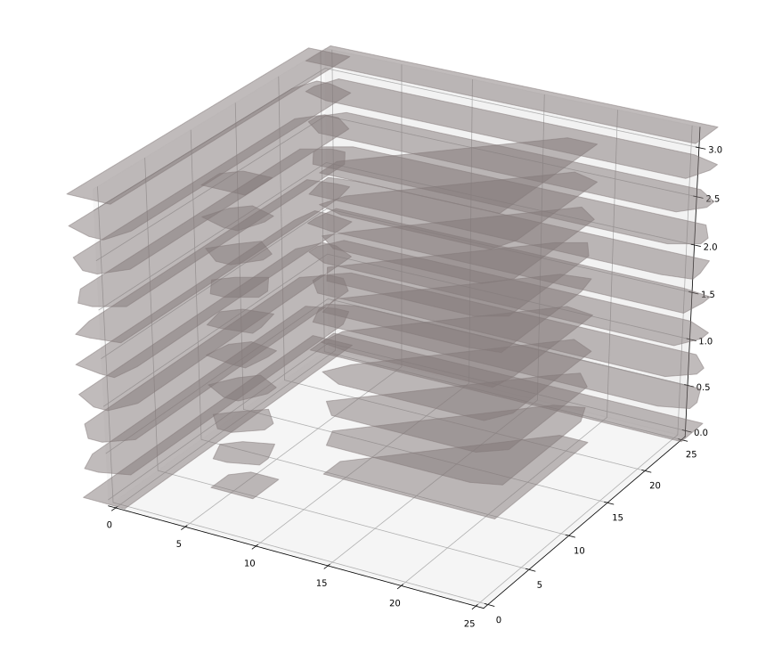
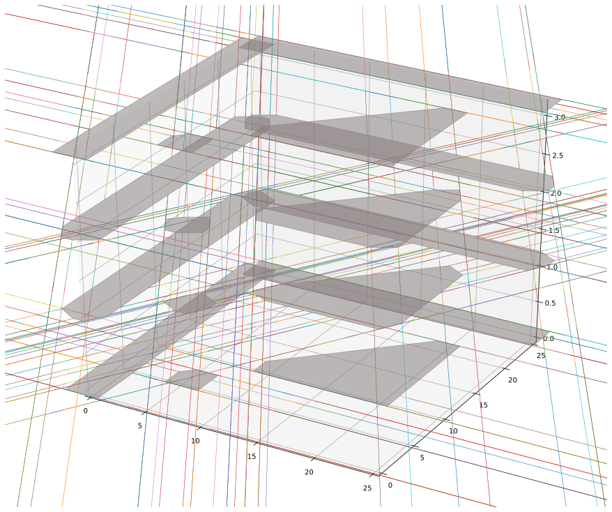
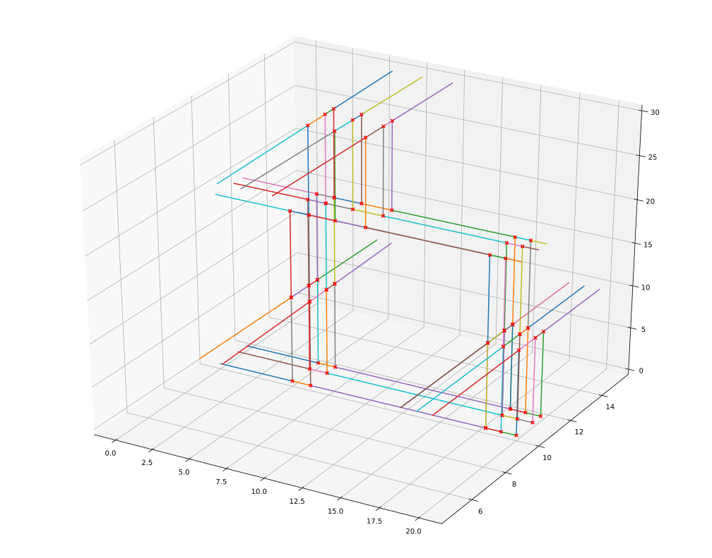
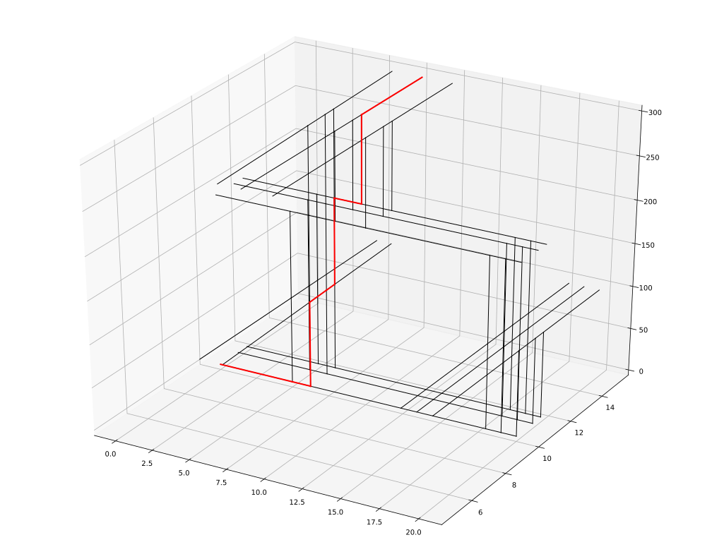
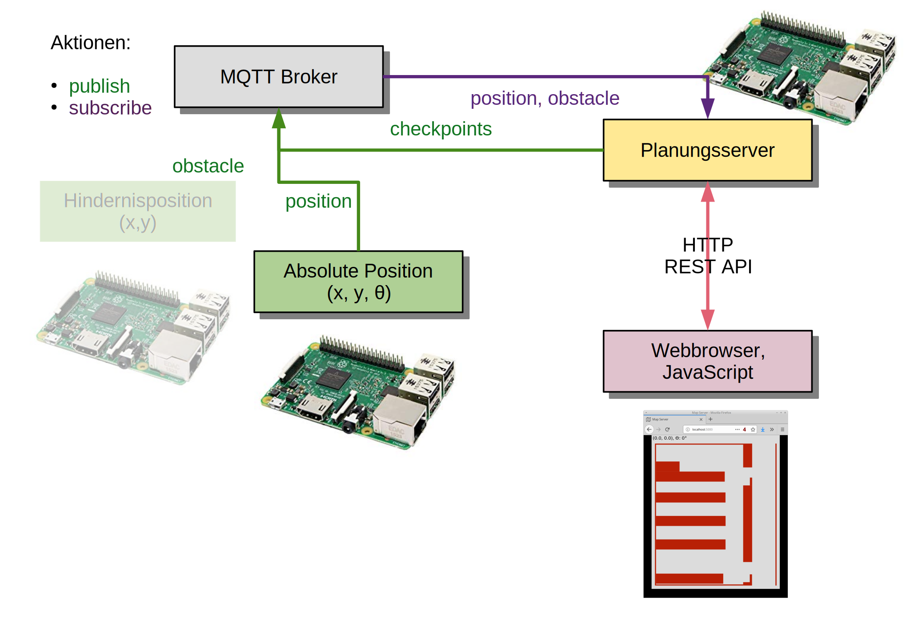

Wegeplanung für ein autonomes indoor Personenbeförderungssystem
Master Projektarbeit von Marc Lasch
Betreuer Prof. Dr.-Ing. Gerhard Schäfer
Übersicht
- Problembeschreibung
- Lösungsansätze
- Implementierung
- Demonstration
Problembeschreibung
- Voraussetzung
- Position im Raum liegt vor
- Feste Hindernisse im Raum sind bekannt
⇨ Gebäudeplan - Sensoren erkennen dynamische Hindernisse
- Zielbeschreibung
- Wegeplanung (path planning, motion planning)
- Visualisierung (browser-basiert)

Problembeschreibung: Black-Box-Modell
Problembeschreibung: Black-Box-Modell
Darstellung des Rollstuhls
- Rollstuhl wird als Kreis betrachtet
- Rollstuhl wird als Polygon abstrahiert
- konstruktion des kleinsten Kreises um den Rollstuhl
- Kollisionen sind unabhängig von der Drehung

Repräsentation des Rollstuhls, Dimensionen in m
1. Ansatz
- Gruppe der sog. bug algorithms
- Finden nicht den idealen/kürzesten Weg
- Lassen sich auch auf unbekanntes Terrain anwenden
- Benötigen nur lokales Wissen
- Wurden für Tastsensoren entwickelt

BUG2 [V. Lumelsky and A. Stepanov. Path planning strategies for point mobile
automaton moving amidst unknown obstacles of arbitrary shape.]
2. Ansatz
- Problem aus der Robotik / Spieleprogrammierung
- Aktionsradius eines Roboterarms
- Bewegung einer Spielfigur
Beispiel: Age of Empires 2

- Karte als Gitternetz abgespeichert
- Graphen Algorithmen anwendbar
- Dijkstra
- A*
- Hier: Knoten im Graph haben gleichen Abstand, Kantenkosten
2. Ansatz
Arbeitsraum

Arbeitsraum + Abstand

2. Ansatz
- Hindernisse werden aus dem Gitter ausgeschnitten:


2. Ansatz
- Kürzester Pfad kann berechnet werden

2. Ansatz
- Problem
- Speicherverbrauch (Raum LI27: 14.37m x 12.54m)
- Bei 2cm Auflösung: 450500 Knoten im Graph
- Lösung: Quadtree
- Effiziente Datenstruktur
- Kompromiss zwischen Genauigkeit und Auflösung
https://de.wikipedia.org/wiki/Quadtree
- Lösung: Sichtgraph
- Graphknoten nur da wo sinnvoll
- Effizienter Graph, wenig Speicherverbauch
Ansatz 2: Sichtgraph
Einschub: Konfigurationsraum
- Abbildung eines geometrischen Objekts vom Arbeitsraum auf einen Punkt im Konfigurationsraum
- Ermöglicht Wegeplanung abhängig von der Drehung
- Berechnung:
- Betrachtung der Obekte als Polygone
- Berechnung der Summe
- Erzeugen der konvexen Hülle der resulierenden Punkte
Ansatz 3: Mehrdimensionaler Konfigurationsraum
Ansatz 3: Mehrdimensionaler Konfigurationsraum
Ansatz 3: Mehrdimensionaler Konfigurationsraum
Mögliche Pfade im Konfigurationsraum

Pfad im Graph

Implementierung: Messaging Architektur
Implementierung: Benutzeroberfläche

-
Darstellung
- Position und Drehung des Rollstuhls
- Beweungsvektoren des Rollstuhls
- Linksklick: Ziel
- Taste p: Start Wegefindung
- Taste ESC: Aktion abbrechen
Implementierung: Darstellung der Umgebung
- Hinderniskarte als .dxf Datei
- Kann von gängigen CAD Programmen editiert werden
- LibreCAD, Menotor AutoCad, etc.

LibreCAD, Raum Li-27
- Hindernisse werden als Polygone abgespeichert, ezdxf
- Berechnung des Konfigurationsraums auf Basis der Polygone
- Voraussetzung: Polygone sind konvex
Demonstration
Zusammenfassung
- Verschiedene Ansätze zur Wegefindung verglichen
- Implementierung der Algorithmen auf einem Raspberry Pi
- Modularer Aufbau, IP-Netzwerk-basierte Architektur
- Relalisierung einer webbasierten Benutzeroberfläche
- Universelle Schnittstellen für zukünftige Erweiterungen
- Probleme bei der Implementierung
- Laufzeit der Algorithmen auf komplexen Karten mit vielen Hindernissen, besonders beim 3. Ansatz
- Numerische Genauigkeit bei der Berechnung der geometrischen Mathematik
- Ausblick
- "gleichförmigere" Bewegungen
- Effiziente Implementierung der Wegefindung in Abhängigkeit der Drehrichtung
- Kürzlich vorgestellt: Raspberry Pi 4